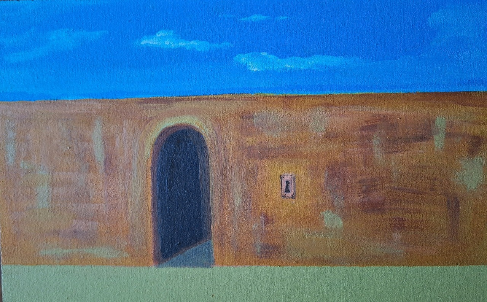
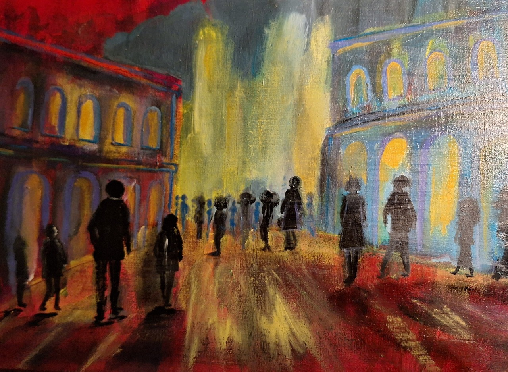
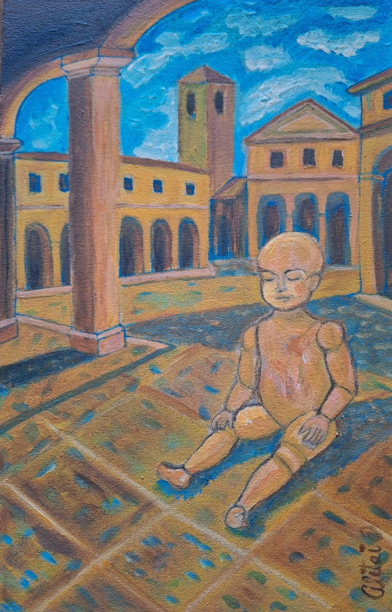
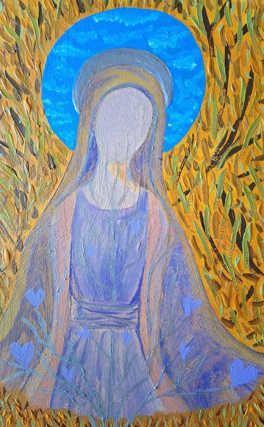
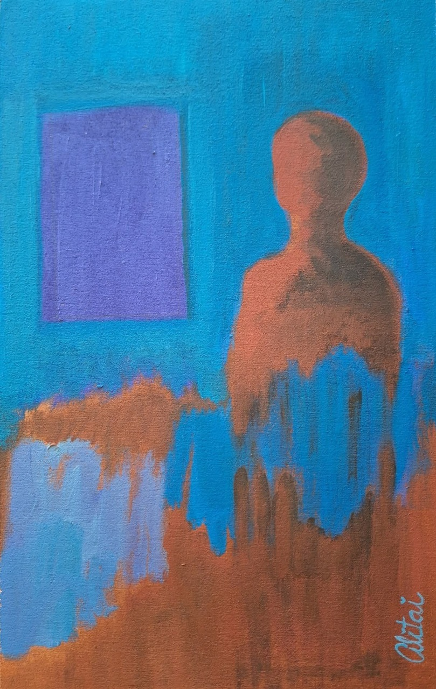

Inicios
DM 36x23cm – Acrílico/ Año 2025
En “Inicios” el visitante ve el primer indicio de salida.
Debe sentirse como un “click” interno: la percepción cambia.
Una pared clara con luz direccional para que el “vano oscuro” y “la llave” destaquen.
El muro terroso recuerda la materia, a la arcilla del origen, mientras que el cielo
amplísimo se abre como una promesa aún intacta.
La obra parece situada en esa frontera donde el ser no ha atravesado la puerta,
pero ya intuye que la transformación es inevitable.
El ojo de la cerradura en la pared-sin llave visible,
sin mecanismo externo-invierte la lógica del acceso: no se trata de encontrar algo afuera,
sino reconocer que la llave siempre estuvo del lado interior.
La cerradura está afuera, pero la llave está adentro.
El muro representa “aquello que creemos” que nos separa del paso hacia la luz.
La puerta oscura es la zona inconsciente, del no sabido.
La cerradura sugiere que lo que buscamos no se abre desde afuera,
sino de la conciencia propia.

Frecuencias Fantasmas
DM 36x23cm – Acrílico/ Año 2025
“En Frecuencias fantasmas” la obra pide un espacio donde se respire lo simbólico y
se perciba la multiplicidad del inconsciente personal y colectivo.
La obra explora la energía sutil que permanece más allá de la materia, evocando las
resonancias del alma y las memorias del tiempo. El título “Frecuencias fantasmas”
no alude a figuras temidas, sino a aquello que queda más allá de la forma: huellas
de energía, presencias sutiles del alma que continúan vibrando incluso cuando el
cuerpo ya no es cuerpo.
Inspirada en la psicología de Carl G. Jung, la composición plantea la unidad de los
opuestos: luz y oscuridad, presencia y ausencia, materia y espíritu.
En este encuentro de contrastes, la pintura se convierte en un campo de vibración
donde el alma se manifiesta como frecuencia, revelando la dimensión invisible que
habita en toda forma.
Tiempo perfecto
DM 23x36cm – Acrílico/ Año 2025
La obra simboliza el universo metafísico donde la escena no es una realidad
meramente descriptiva, sino interiorista.
En “Tiempo perfecto” el tiempo no es cronológico sino un instante,
un momento meditativo, un tiempo interior donde el ser humano hace un insight,
donde algo se revela.
El tiemposer humano mira el infinito en busca de su trascendencia ubicado en ese
umbral entre su luz y su sombra para revelarse que el alma habita en la unión de los opuestos.
El proceso primordial de desarrollo psíquico según Jung consiste en ese conocer y
re-conocer los opuestos dentro de uno mismo por esta razón el alma habita donde
la luz toca la sombra.

Nacimiento
DM 23x36cm – Acrílico/ Año 2025
En un escenario cargado de simbología metafísica aparece un bebé maniquí.
Ese bebé no nace a la vida común sino a la soledad creadora.
Su despertar metafísico es la primera experiencia de un artista:
sentir el vacío, el eco del mundo antes que las palabras, y desde allí empezar
a construir espacios imaginarios, refugios donde la creación se convierte en una
forma de compañía.
El nacimiento no se celebra: se contempla.
Es una aparición silenciosa en la que el alma encarna,
sabiendo que su destino será habitar el enigma.

Lo Divino Femenino
DM 23x36cm – Acrílico/ Año 2025
Lo divino femenino revela la fuerza que une cielo y tierra a través de la figura.
Esa presencia es un puente vivo entre la intuición y la luz universal,
recordando que lo divino femenino no se impone: revela, nutre, conecta.
Aquí la energía asciende y desciende integrando lo humano, lo natural y lo
cósmico en un mismo gesto.
Lo divino femenino se vuelve así un umbral: una invitación a recordar que nuestra
luz crece cuando la dejamos circular entre cielo y tierra.

Pienso, luego existo
DM 23x36cm – Acrílico/ Año 2025
“Pienso, luego existo” funciona como síntesis y declaración final del camino.
La obra no se trata de un retrato, sino de una presencia que emerge del acto mismo de pensar.
La identidad ya no se anuncia desde la forma, sino desde la conciencia que la sostiene.
La figura de espaldas a su propio espejo es un símbolo de introspección;
es el ser mirando hacia su interior, reconociéndose como existencia pura.
Pienso, luego existo convierte el recorrido “Hacia la luz” en un viaje circular:
comienza en el misterio del origen y termina en el descubrimiento de la conciencia.
La luz, entonces, no es destino, sino revelación.